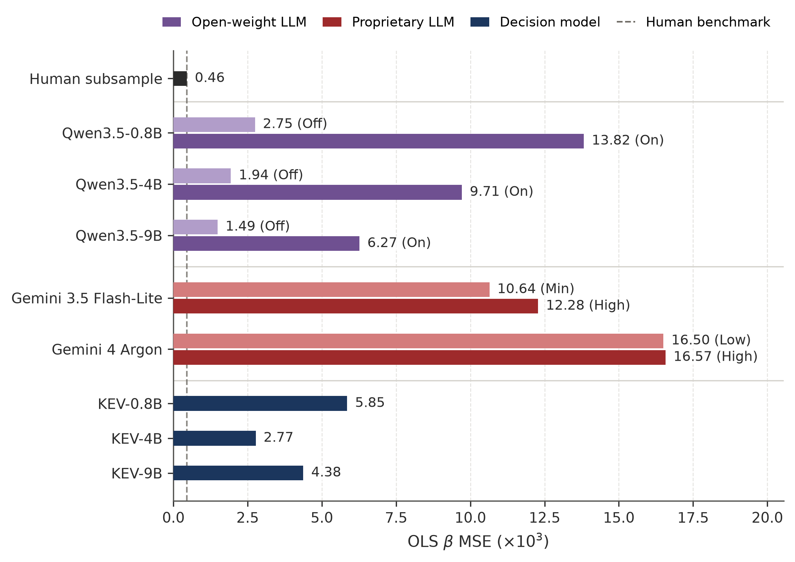

Training decision models for simulating human respondents
Abstract
Using off-the-shelf generative large language models (LLMs) to simulate human respondents (silicon sampling) severely biases downstream econometric inference, while standard fine-tuning requires individual choice microdata that most published studies never release. We align single-pass decision models that output normalized choice probabilities directly over valid options without text generation, making linear regression estimators directly differentiable in model weights. To unlock studies that report only experimental designs and aggregate regression tables, we derive an unbiased mini-batch population-\(\boldsymbol{\beta}\) loss that pairs a frozen base-probability control variate with split-sample cross-products, stabilized by a Kullback-Leibler anchor on table-only data or respondent-level cross-entropy (CE) on available microdata. We evaluate open-weight decision models across five data-access regimes trained on consumer delivery and electricity-plan choice studies and tested zero-shot on an airline conjoint experiment and a six-arm nutrition-labeling randomized trial. Microdata CE fine-tuning substantially lowers out-of-sample treatment-effect mean squared error (MSE), table-only training beats the off-the-shelf baseline without a single respondent choice, and hybrid microdata-plus-table training transfers missing price and green-energy trade-offs to close [TBD]% to [TBD]% of the gap toward a full-microdata oracle.
Keywords. Decision models, Large Language Models, Synthetic respondents, Econometric inference, Marketing research
Introduction
Using foundation models as synthetic respondents to simulate consumer choices has attracted growing interest in marketing and behavioral research. In marketing, the primary goal is downstream econometric inference, such as estimating attribute slopes in conjoint analysis or recovering causal treatment effects in randomized experiments. Most studies generate synthetic choice data with off-the-shelf generative large language models (LLMs), yet substituting these outputs for human responses severely biases downstream regressions (Goli and Singh 2024, Leng et al. 2026, Wang et al. 2026). This bias arises because off-the-shelf LLMs are optimized for deterministic text generation and safety compliance, which collapses choice uncertainty and triggers refusals. For instance, on a vaccines conjoint subsample (Kreps et al. 2020), off-the-shelf models incur large ordinary least squares (OLS) treatment-effect error relative to human respondents (Wang et al. 2026). Contrary to common expectation, using proprietary models or increasing reasoning effort can even increase this error (Figure 1). Additionally, generative LLMs are slow and computationally expensive. Since they produce responses as tokens, approximating their choice probabilities requires costly Monte-Carlo sampling.
To overcome the time and computation costs of text generation, we investigate system one decision models (Deußer et al. 2026, Geuter et al. 2026, Palmer 2026). Unlike generative LLMs, a decision model replaces the text-generation head with a scoring layer over candidate options. Given a respondent persona and choice task, it outputs normalized choice probabilities in a single forward pass. This single-pass directly generates the probability distribution of choices, eliminates Monte Carlo sampling cost and noise, and yields exact expected OLS treatment effects directly from predicted probabilities. Despite their architectural advantage, off-the-shelf decision models still suffer from high error in their OLS estimates (Figure 1). Because these models are pretrained on single-label objective benchmarks rather than human choice behavior, they treat disagreement among respondents with the same persona as classification error (Gao et al. 2026).
In this research, we train decision models by updating their weights on historical human choice microdata, a procedure we call choice training. Specifically, we minimize respondent-level cross-entropy (CE), which is equivalent to conditional maximum likelihood estimation, and test whether choice training transfers to unseen marketing and behavioral studies.

Note. Bars report population OLS \(\boldsymbol{\beta}\) MSE (\(\times 10^3\)) across 11 vaccine attribute levels on the 200-respondent Vaccines conjoint subsample (n = 1,000 choice tasks; Wang et al. 2026). Errors are measured relative to full-sample human estimates (N = 1,971 respondents; 9,855 choice tasks).
Empirically, we evaluate choice training across three open-weight decision-model scales (0.8B, 4B, and 9B parameters; Palmer 2026). We evaluate generalizability of our training on four unseen held-out studies: a nutrition-labeling trial (Grummon et al. 2025), a vaccine conjoint (Kreps et al. 2020), a consumer-rights conjoint (Kantorowicz-Reznichenko et al. 2026), and an AI smartphone conjoint (Magistro et al. 2026). We show that although scaling to proprietary models or increasing reasoning effort can worsens OLS MSE, choice training with respondent-level CE substantially lowers this error on unseen studies, across model scales.
Literature review
Early work in silicon sampling prompted generative LLMs with demographic profiles to simulate human responses in political, economic, and marketing surveys (Argyle et al. 2023, Brand et al. 2023, Horton et al. 2023, Santurkar et al. 2023, Durmus et al. 2024, Goli and Singh 2024, Sarstedt et al. 2024). Although generative LLMs often capture the direction of average preferences, prior studies document systematic discrepancies from human populations, including mode collapse onto a single option, attenuated within-group variance, demographic stereotyping, and prompt sensitivity (Santurkar et al. 2023, Koo et al. 2024, Shu et al. 2024, Wadi and Fredette 2025, Deas and McKeown 2025, Kabir et al. 2025, Zahradnickova et al. 2026, Jung et al. 2026). In marketing applications, these distortions severely bias downstream econometric estimation (Goli and Singh 2024, Leng et al. 2026, Wang et al. 2026). In choice-based conjoint analysis, relying on simulated choices or naively pooling them with human data biases preference estimates, while scaling model capability or chain-of-thought reasoning worsens error by inducing overly deterministic choices (Wang et al. 2026). Recent marketing studies address these discrepancies after inference by treating the language model as a fixed generator, using target-study human benchmark data to statistically debias downstream regression parameters (Wang et al. 2026, Angelopoulos et al. 2023; AAE) or optimally reweight ensembles of candidate prompts, personas, and model checkpoints (Leng et al. 2026; HuMCal). Complementing these post-inference methods, we align predictions inside the model before inference through both output architecture and training supervision.
Architecturally, several studies avoid the cost and sampling variance of repeated Monte Carlo text generation by extracting next-token probabilities over option symbols (e.g., A, B, and C) from causal LLMs (Kadavath et al. 2022, Kuribayashi et al. 2024, Bentegeac et al. 2025, Wadi et al. 2026). Yet symbol-level readouts remain sensitive to vocabulary and token-frequency priors. Decision models, also known as System One architectures, resolve this sensitivity via a single-pass scoring head (Asseri and Asseri 2026, Deußer et al. 2026, Geuter et al. 2026, Li 2026, Li and Wagle 2026, Palmer 2026). This head evaluates each supplied option directly in representation space and restricts probability mass strictly to the valid options without open-ended generation or safety refusals. Crucially for econometric training, outputting exact choice probabilities in a single forward pass makes linear regression operators over experimental designs directly differentiable with respect to model parameters. However, existing decision models are pretrained on single-label objective benchmarks such as mathematics, code verification, and factual question answering, causing severe probability miscalibration on subjective choice tasks (Gao et al. 2026).
On the training dimension, existing fine-tuning approaches for silicon sampling require access to unreleased response data. At the token level, Wang et al. (2026) fine-tuned GPT-4o on 50 target-study conjoint tasks under a generic persona to emit a single choice letter, finding that small-sample single-token supervision worsened standalone parameter error relative to the human benchmark. Recent studies improve calibration by supervising causal language models or decision heads on large-scale survey microdata and subgroup response histograms (Suh et al. 2025, Ku et al. 2026, Huang et al. 2026). When respondent-level choice microdata is available, minimizing CE on a probabilistic decision head effectively calibrates conditional choice probabilities across personas. Yet across conjoint analysis, discrete-choice modeling, and randomized online or field trials, published articles and archival industry reports rarely disclose raw respondent choices, reporting instead experimental designs and estimated regression tables. We bridge this data gap by supervising decision models directly on published population OLS coefficients via an unbiased split-sample moment loss, deployed either standalone with a base-distribution KL anchor when no microdata exists or jointly alongside respondent-level CE when augmenting in-house microdata with external literature tables.
Methodology
Decision model architecture. Consider an experimental study consisting of \(N\) discrete-choice tasks indexed by \(t \in \{1, \dots, N\}\). Each task \(t\) pairs a respondent’s multi-attribute persona \(\mathbf{s}_t\) (e.g., sex, age, education, income, political party, and race) with experimental instructions and a choice question presenting \(K_t\) discrete options \(\{1, \dots, K_t\}\). Let \(\mathbf{y}_t = (y_{t,1}, \dots, y_{t,K_t})^\top \in \{0, 1\}^{K_t}\) denote the observed one-hot choice vector on task \(t\), where \(y_{t,k} = 1\) if the respondent selected option \(k\) and \(0\) otherwise.
Rather than generating text tokens, a single-pass decision model replaces the vocabulary head in an LLM with a pointer-head projection that scores all \(K_t\) options in one forward pass. The architecture accepts three generic inputs: a context state, a task instruction, and a set of candidate options. To cast consumer simulation into this format, we map the respondent’s persona \(\mathbf{s}_t\) into the state input and the experimental instructions and choice question into the instruction input. We then provide the \(K_t\) choice alternatives as candidate options, each wrapped in start and end boundary tokens, followed by a final decision token. Because this decision token appears last, its final-layer hidden state \(\mathbf{h}^{\mathrm{dec}}_t(\theta) \in \mathbb{R}^{d_{\mathrm{model}}}\) conditions on the persona, question, and all \(K_t\) options. Similarly, the final-layer hidden state at the end token of option \(k\), denoted \(\mathbf{h}_{t,k}(\theta) \in \mathbb{R}^{d_{\mathrm{model}}}\), summarizes option \(k\) in context. Here \(\theta\) collects all trainable parameters, combining low-rank backbone adapters with the pointer head. Using learned affine projections \((\mathbf{W}_q, \mathbf{b}_q)\) and \((\mathbf{W}_k, \mathbf{b}_k)\) of dimension \(d_{\mathrm{head}}\), the pointer head computes an unnormalized scalar score \(z_{t,k}(\theta)\) for each option \(k\): \[ z_{t,k}(\theta) = \frac{\big(\mathbf{W}_q \mathbf{h}^{\mathrm{dec}}_t(\theta) + \mathbf{b}_q\big)^\top \big(\mathbf{W}_k \mathbf{h}_{t,k}(\theta) + \mathbf{b}_k\big)}{\sqrt{d_{\mathrm{head}}}}. \tag{1}\] Applying a softmax function yields the conditional choice probability vector \(\mathbf{p}_t(\theta) = (p_{t,1}(\theta), \dots, p_{t,K_t}(\theta))^\top\) in a single forward pass: \[ p_{t,k}(\theta) = P_{\mathrm{model}}(Y_t = k \mid \mathbf{s}_t; \theta) = \frac{\exp\!\big(z_{t,k}(\theta)\big)}{\sum_{m=1}^{K_t} \exp\!\big(z_{t,m}(\theta)\big)}. \tag{2}\] Formally, Equation 2 defines a single-pass neural multinomial logit model (McFadden 1972, Train 2009) with \(z_{t,k}(\theta)\) serving as systematic utility. Unlike text generation, this readout restricts probability mass strictly to the \(K_t\) valid options and eliminates safety refusals.
Microdata choice training. Off-the-shelf decision models inherit overconfident scores \(z_{t,k}(\theta)\) from objective single-label pretraining (Gao et al. 2026). Whereas post-inference adjustment and reweighting methods keep model weights fixed and require target-study human data (Leng et al. 2026, Wang et al. 2026), choice training updates \(\theta\) before inference on historical respondent-level choice microdata. Specifically, we jointly train low-rank adaptation (LoRA) weights (Hu et al. 2021) on the language-model backbone together with the pointer head in Equation 1. For a mini-batch \(S \subset \{1, \dots, N\}\) of historical choice tasks, we minimize the mean per-task cross-entropy loss: \[ \mathcal{L}_{\mathrm{CE}}(\theta; S) = -\frac{1}{|S|} \sum_{t \in S} \sum_{k=1}^{K_t} y_{t,k} \log p_{t,k}(\theta). \tag{3}\] Minimizing Equation 3 is mathematically equivalent to conditional maximum likelihood estimation of Equation 2. Because cross-entropy is a strictly proper scoring rule, its population minimizer recovers the conditional choice distribution across respondents sharing persona \(\mathbf{s}_t\) rather than collapsing onto a deterministic mode. Crucially, no target-study data ever enters Equation 3, so held-out performance evaluates pure unseen-study transfer.
Econometric evaluation. On an unseen evaluation study, model weights \(\theta\) remain fixed and we apply the study’s exact published linear econometric specification directly to model-implied expected outcomes. Consider each published OLS regression \(g \in \{1, \dots, G\}\) in the study, with full-column-rank design matrix \(\mathbf{X}^{(g)}\) and human outcome vector \(\mathbf{o}^{(g)}(\mathbf{y})\). The matrix \(\mathbf{X}^{(g)}\) contains an intercept, any nuisance controls, and \(d_g\) focal treatment indicators indexed by \(\mathcal{T}_g\). Each entry of \(\mathbf{o}^{(g)}(\mathbf{y})\) records a binary choice indicator (profile selection in conjoints or healthier-product identification in trials) or a one-to-five ordinal support score. Because each outcome is linear in \(\mathbf{y}_t\), substituting \(\mathbf{p}_t(\theta)\) from Equation 2 yields the exact expected outcome vector \(\bar{\mathbf{o}}^{(g)}(\theta) = \mathbb{E}[\mathbf{o}^{(g)}(\tilde{\mathbf{y}}) \mid \mathbf{s}; \theta]\) under synthetic choices \(\tilde{\mathbf{y}}_t \sim \mathbf{p}_t(\theta)\). Applying the published OLS estimator to \(\bar{\mathbf{o}}^{(g)}(\theta)\) and \(\mathbf{o}^{(g)}(\mathbf{y})\) then gives the focal slopes in the study’s natural units (probability points or rating points): \[ \boldsymbol{\beta}^{(g)}(\theta) = \Big(\big(\mathbf{X}^{(g)\top}\mathbf{X}^{(g)}\big)^{-1}\mathbf{X}^{(g)\top}\bar{\mathbf{o}}^{(g)}(\theta)\Big)_{\mathcal{T}_g}, \qquad \boldsymbol{\beta}^{(g),\mathrm{human}} = \Big(\big(\mathbf{X}^{(g)\top}\mathbf{X}^{(g)}\big)^{-1}\mathbf{X}^{(g)\top}\mathbf{o}^{(g)}(\mathbf{y})\Big)_{\mathcal{T}_g}. \tag{4}\] Because OLS is linear in the outcome vector, \(\boldsymbol{\beta}^{(g)}(\theta)\) equals the exact expected treatment effect under \(\mathbf{p}_t(\theta)\) with zero Monte Carlo simulation variance.
Our primary benchmark metric is the population slope mean squared error pooled across all \(d = \sum_{g=1}^G d_g\) focal treatment slopes in a study: \[ \mathrm{MSE}_{\beta}(\theta) = \frac{1}{d} \sum_{g=1}^G \left\lVert \boldsymbol{\beta}^{(g)}(\theta) - \boldsymbol{\beta}^{(g),\mathrm{human}} \right\rVert_2^2. \tag{5}\] As a secondary individual-level check in the Web Appendix, we also compute Choice KL, the mean Kullback-Leibler divergence from each observed choice \(\mathbf{y}_t\) to \(\mathbf{p}_t(\theta)\). Because \(\mathbf{y}_t\) is one-hot, Choice KL equals full-study cross-entropy \(\mathcal{L}_{\mathrm{CE}}(\theta; \{1, \dots, N\})\) from Equation 3 in nats.
Experimental setup
Studies and transfer design
We evaluate choice training across seven published choice studies spanning distinct product and policy domains, with zero domain overlap between training and evaluation (Table 1). Two US studies supply all respondent-level training microdata through Equation 3: Electricity (Wu 2025), a paired electricity-plan conjoint, and Drones (Berke et al. 2023), a discrete-choice experiment on drone versus ground delivery across four vendor contexts. Both training studies vary price (monthly bill or delivery fee), whereas only Electricity varies sustainability attributes. To keep held-out test benchmarks strictly untouched during model selection, we designate Flights (Goldfarb et al. 2026) as a dedicated validation set that selects every training run’s checkpoint. Because Flights pairs ticket price and sustainable aviation fuel with four airline-specific attributes, it measures shared-attribute transfer while cleanly separating checkpoint selection from held-out evaluation.
Our four unseen-study test benchmarks never enter training, hyperparameter tuning, or checkpoint selection, and they divide into two tiers of attribute overlap to identify where choice training transfers (Table 1). First, two price-bearing tests pair substantially wider price ranges with novel domain attributes. Consumer rights (Kantorowicz-Reznichenko et al. 2026) fields paired US conjoints for laptop computers and laundry machines featuring contractual and legal rights. In turn, AI & offshoring (Magistro et al. 2026) fields a US and Canadian smartphone conjoint measuring five-point support across price and job changes. Second, two disjoint-attribute US tests contain neither price nor sustainability. Food labels (Grummon et al. 2025) runs a six-arm nutrition-labeling randomized trial measuring healthier-product identification against a positive-label control. Meanwhile, Vaccines (Kreps et al. 2020) runs a three-option COVID-19 vaccine conjoint with an opt-out option across health and institutional attributes. Across all seven studies, each choice task conditions on the respondent’s observed demographics in a standardized persona format with missing fields omitted (mappings appear in the Web Appendix).
| Dataset | Study | Role | Shared attributes (price, sustainability) | Novel study attributes | Respondents | Choices | Slopes |
|---|---|---|---|---|---|---|---|
| Electricity | Wu (2025) | Training (microdata) | Monthly bill ($105 to $125), renewable share (10% to 100%), local renewables |
None | 1,861 | 18,591 | n/a |
| Drones | Berke et al. (2023) | Training (microdata) | Delivery fee ($0 to $10) |
Wait time, drone privacy | 3,625 | 36,297 | n/a |
| Flights† | Goldfarb et al. (2026) | Validation (shared-attribute) | Ticket price ($250 to $325), sustainable aviation fuel |
Airline, baggage, legroom, seat | 1,000 | 5,000 | 12 |
| Consumer rights | Kantorowicz-Reznichenko et al. (2026) | Held-out test (price-bearing) | Laptop ($500 to $2,000) and laundry ($400 to $1,400) price |
Brand, specs, warranty, privacy, liability, conflict resolution | 2,242 | 26,823 | 38 |
| AI & offshoring | Magistro et al. (2026) | Held-out test (price-bearing) | Smartphone price ($300 to $600) |
Customer service, factory, and data science jobs | 5,525 | 21,005 | 32 |
| Food labels | Grummon et al. (2025) | Held-out test (disjoint-attribute) | None | Front-of-package warning labels (6 arms) | 5,633 | 33,798 | 5 |
| Vaccines | Kreps et al. (2020) | Held-out test (disjoint-attribute) | None | Efficacy, duration, side effects, FDA, origin, endorsements | 1,971 | 9,855 | 11 |
Note. Shorthand labels in the first column are used throughout all tables and figures. Training datasets (Electricity and Drones) enter exclusively as respondent-level choice microdata via Equation 3, so evaluation slopes are not applicable (n/a). Slopes reports the number of population OLS treatment effects evaluated via Equation 4: Consumer rights spans two product conjoints of 19 slopes each (38 total), and AI & offshoring spans four country-by-arm regressions of 8 slopes each (32 total) on a five-point support scale (1 to 5). † Flights (Goldfarb et al. 2026) is the shared-attribute validation set used solely to select each training run’s checkpoint.
Choice-training regimes
Across every model scale, we evaluate a \(2 \times 2\) microdata choice-training design spanning four regimes. Off-the-shelf evaluates the unmodified decision model without choice training (\(0\) steps). Electricity trains on the 18,591 choice tasks from Wu (2025) (1,395 steps over \(3\) epochs), whereas Drones trains on the 36,297 choice tasks from Berke et al. (2023) (2,730 steps over \(3\) epochs). Finally, Drones + Electricity pools all 54,888 respondent choices from both studies under Equation 3 (4,125 steps over \(3\) epochs). This factorial design isolates whether single-study training already transfers to unseen studies, whether training-domain composition matters, and whether pooling distinct choice studies compounds unseen-study gains.
Models, training protocol, and evaluation
We evaluate the KEV-0.8B, KEV-4B, and KEV-9B open-weight decision models (Gao et al. 2026, Palmer 2026), each loaded in bfloat16 precision with unit head temperature (\(T = 1.0\)). Choice training updates LoRA adapters (rank \(r = 64\), scaling \(\alpha_{\mathrm{LoRA}} = 128\), dropout \(0.05\)) across all linear backbone projections jointly with the trainable pointer head via Equation 3. Every trained run uses AdamW with a \(5 \times 10^{-6}\) peak learning rate, a OneCycle schedule (\(10\%\) warmup and cosine decay), weight decay \(0.01\), and gradient-norm clipping at \(1.0\). Training runs for \(3\) epochs with mini-batch size \(|S| = 40\) and random seed \(42\). Within each epoch, tasks are shuffled independently within each study (and within each vendor context in Drones), partitioned into single-dataset mini-batches, and interleaved randomly. We validate each run on Flights at step \(0\), every \(32\) steps (\(1,280\) tasks), and the final step, selecting the checkpoint with the lowest validation \(\mathrm{MSE}_\beta\) (Equation 5). Main-text results report population slope MSE from Equation 4 and Equation 5 multiplied by \(10^3\). The Web Appendix reports Choice KL in nats (Section 3) alongside the off-the-shelf generative LLM protocol used in Figure 1.
Discussion and Conclusion
Declarations
Funding and Competing Interests
All authors certify that they have no affiliations with or involvement in any organization or entity with any financial interest or non-financial interest in the subject matter or materials discussed in this manuscript. The authors have no funding to report.
References
Web Appendix
| Wave | Thematic module | Questions | Likert (score) |
Categorical (choice) |
Respondents | Mean Qs / respondent | Responses |
|---|---|---|---|---|---|---|---|
| 2015 | Work orientations IV | 82 | 68 | 14 | 1,474 | 49.1 | 72,416 |
| 2016 | Role of government V | 60 | 52 | 8 | 1,384 | 58.6 | 81,043 |
| 2017 | Social networks and social resources | 60 | 32 | 28 | 1,173 | 59.2 | 69,500 |
| 2018 | Religion IV | 62 | 50 | 12 | 1,175 | 60.2 | 70,719 |
| 2019 | Social inequality V | 49 | 44 | 5 | 1,852 | 45.9 | 84,963 |
| 2020 | Environment IV | 55 | 45 | 10 | 1,847 | 52.3 | 96,598 |
| 2021 | Health and health care II | 58 | 50 | 8 | 1,146 | 54.8 | 62,793 |
| 2022 | Family and changing gender roles V | 55 | 32 | 23 | 1,126 | 45.6 | 51,303 |
| 2023 | National identity and citizenship | 60 | 56 | 4 | 1,589 | 56.3 | 89,391 |
| 2024 | Digital societies | 75 | 45 | 30 | 1,590 | 55.8 | 88,758 |
| Total | All 10 US waves (2015 to 2024) | 616 | 474 | 142 | 14,356 | 53.5 | 767,484 |
Note. Counts combine training and held-out validation items extracted from the US subsample of each annual ISSP thematic module. Four ordinal Likert (score) items from the 2020 Environment IV wave (7,011 responses across 1,827 respondents) are held out for validation; all remaining 612 items (760,473 responses) enter training.
| Prompt attribute | Harmonized levels | Datasets |
|---|---|---|
| Sex | 3 (Male, Female, Non-binary) | ISSP, Twin-2K, Conjoint, Nutrition RCT |
| Age | 4 (18-29, 30-49, 50-64, 65+) | ISSP, Twin-2K, Conjoint, Nutrition RCT |
| Education | 4 (Less than high school, High school or some college, Associate’s degree, College graduate/some postgrad) | ISSP, Twin-2K, Conjoint, Nutrition RCT |
| Religion | 12 (Protestant, Catholic, Orthodox, …, Other) | ISSP, Twin-2K, Conjoint |
| Attendance of religious services | 6 (More than once a week, Once a week, Once or twice a month, A few times a year, Seldom, Never) | ISSP, Twin-2K |
| Political ideology | 8 (Very liberal, Liberal, Somewhat liberal, …, Other) | ISSP, Twin-2K, Conjoint |
| Voted in the last general election | 2 (Yes, No) | ISSP |
| Place of living | 5 (A big city, The suburbs or outskirts of a big city, A town or a small city, A country village, A farm or home in the country) | ISSP |
| Marital status | 6 (Married, Living with a partner, Divorced, Separated, Widowed, Never been married) | ISSP, Twin-2K |
| Main activity | 10 (Full-time employment, Part-time employment, Self-employed, …, Other) | ISSP, Twin-2K |
| Trade union membership | 2 (Yes, No) | ISSP |
| Political party | 5 (Democrat, Republican, Independent, Something else, Other candidate) | ISSP, Twin-2K, Conjoint |
| Income | 15 (Less than $30,000, $30,000 - $50,000, $50,000 - $75,000, …, $35,000 - $49,999) | ISSP, Twin-2K, Conjoint, Nutrition RCT |
| Region | 4 (Northeast, Midwest, South, West) | ISSP, Twin-2K, Conjoint |
| Ancestry | 96 (Algeria, American Indian, American only, …, Yugoslavia) | ISSP |
| Race | 5 (White, Black, Asian, Hispanic, Other) | Twin-2K, Conjoint, Nutrition RCT |
| How many people, including yourself, live in your household? | 5 (1, 2, 3, 4, More than 4) | Twin-2K, Nutrition RCT |
| Hispanic or Latino | 2 (No, Yes) | Nutrition RCT |
| How many children (ages 0-18) currently live in your household? | 4 (0, 1, 2, 3 or more) | Nutrition RCT |
| SNAP / Food Stamps recipient | 3 (Don’t know, No, Yes) | Nutrition RCT |
| Do you or anyone else in your household currently receive WIC benefits? | 3 (Don’t know, No, Yes) | Nutrition RCT |
| Nutrition Facts label usage | 5 (Always, Most of the time, Never, Rarely, Sometimes) | Nutrition RCT |
| Share of groceries bought online | 4 (25-49%, 50-74%, 75% or more, Less than 25%) | Nutrition RCT |
| Nutrition literacy score | 5 (0 out of 4, 1 out of 4, 2 out of 4, 3 out of 4, 4 out of 4) | Nutrition RCT |
Note. Attribute levels show the harmonized natural-language categories rendered in each respondent’s persona state \(\mathbf{s}_i\) (abbreviated with ellipses where category lists exceed six values). The bottom seven attributes appear exclusively in the held-out nutrition labeling randomized clinical trial (Grummon et al. 2025) and are never observed during survey training.
| Vaccine attribute level | Full human (N = 9,855) | Human subsample (n = 1,000) | Kev 9B (FT) | Kev 9B (base) | Gemini 3.5 Flash-Lite (high) | Gemini 3.5 Flash-Lite (minimal) | Gemini 4 Argon (high) | Gemini 4 Argon (low) |
|---|---|---|---|---|---|---|---|---|
| Efficacy: 70% (vs. 50%) | +0.361 (0.035) | +0.280 (0.112) | +0.217 (0.113) | +0.565 (0.115) | +1.344 (0.158) | +0.688 (0.135) | +1.940 (0.176) | +1.671 (0.163) |
| Efficacy: 90% (vs. 50%) | +0.746 (0.035) | +0.679 (0.110) | +0.562 (0.111) | +1.074 (0.116) | +2.764 (0.188) | +1.846 (0.145) | +3.538 (0.218) | +3.148 (0.196) |
| Duration: 5 years (vs. 1 year) | +0.261 (0.029) | +0.277 (0.092) | +0.035 (0.093) | +0.105 (0.095) | +0.940 (0.131) | +0.592 (0.114) | +0.948 (0.140) | +0.830 (0.133) |
| Major side effects: 1 in 1,000,000 (vs. 1 in 10,000) | +0.304 (0.029) | +0.389 (0.091) | +0.043 (0.092) | +0.152 (0.093) | +2.353 (0.154) | +1.103 (0.114) | +1.647 (0.146) | +1.634 (0.140) |
| Minor side effects: 1 in 30 (vs. 1 in 10) | +0.076 (0.029) | +0.085 (0.090) | -0.043 (0.092) | +0.024 (0.093) | +0.341 (0.124) | +0.051 (0.109) | +0.282 (0.128) | +0.389 (0.124) |
| FDA: Emergency Use Authorization (vs. Full approval) | -0.115 (0.029) | -0.113 (0.092) | -0.123 (0.093) | -0.068 (0.095) | -1.089 (0.136) | -0.978 (0.115) | -1.223 (0.141) | -1.329 (0.137) |
| Origin: United Kingdom (vs. United States) | -0.140 (0.035) | -0.026 (0.109) | -0.192 (0.110) | -0.173 (0.113) | -0.234 (0.151) | -0.402 (0.127) | -0.527 (0.157) | -0.710 (0.151) |
| Origin: China (vs. United States) | -0.570 (0.036) | -0.425 (0.113) | -0.553 (0.114) | -0.624 (0.118) | -1.908 (0.179) | -2.449 (0.164) | -3.556 (0.227) | -3.341 (0.210) |
| Endorsed: Joe Biden (vs. Donald Trump) | +0.095 (0.040) | +0.100 (0.123) | +0.135 (0.126) | +0.441 (0.128) | +0.600 (0.171) | +0.325 (0.148) | +0.531 (0.178) | +0.385 (0.170) |
| Endorsed: US CDC (vs. Donald Trump) | +0.416 (0.039) | +0.287 (0.123) | +0.621 (0.124) | +1.017 (0.127) | +1.045 (0.172) | +0.635 (0.148) | +1.175 (0.179) | +0.784 (0.169) |
| Endorsed: WHO (vs. Donald Trump) | +0.273 (0.040) | +0.327 (0.124) | +0.516 (0.126) | +0.730 (0.129) | +0.166 (0.173) | +0.334 (0.152) | +0.699 (0.181) | +0.411 (0.173) |
Note. Point estimates and asymptotic standard errors (in parentheses) across the 11 binary vaccine attribute indicators on the 200-respondent subsample (n = 1,000 choice sets) under respondent-persona conditioning, alongside full-sample human estimates (N = 1,971 respondents, 9,855 choice sets; Kreps et al. (2020); Wang et al. (2026)). Respondent personas comprise 9 demographic and political attributes (generative LLM prompts additionally state country). Kev rows use the question wording, option labels, and attribute descriptions of the original survey instrument (Kreps et al. 2020); the generative LLMs are prompted with the Wang et al. (2026) wording.

Note. Panel A reports Mean Absolute Percentage Error (MAPE) and Panel B reports Mean Squared Error (MSE) across the \(d = 11\) vaccine attribute levels on the 200-respondent COVID-19 conjoint subsample (n = 1,000 choice sets; n = 984 for Gemini 4 Argon (high) after 16 neutrality refusals) relative to full-sample human \(\boldsymbol{\beta}^*\) (N = 9,855; Kreps et al. (2020); Wang et al. (2026)).

Note. Panel A reports Mean Absolute Percentage Error (MAPE) and Panel B reports Mean Squared Error (MSE) across the \(d = 11\) vaccine attribute levels on the 200-respondent COVID-19 conjoint subsample (n = 1,000 choice sets) under 9-attribute respondent personas (generative LLM prompts additionally state country) relative to full-sample human \(\boldsymbol{\beta}^*\) (N = 9,855; Kreps et al. (2020); Wang et al. (2026)).
| Trial arm (vs. Positive) | Full human (N = 5,633) | Human subsample (N = 200) | Kev 0.8B (base) | Kev 0.8B (FT) | Kev 4B (base) | Kev 4B (FT) | Kev 9B (base) | Kev 9B (FT) |
|---|---|---|---|---|---|---|---|---|
| Nutrition Info label (vs. Positive) | +0.184 (0.012) | +0.103 (0.076) | +0.076 (0.002) | +0.116 (0.003) | +0.124 (0.003) | +0.065 (0.004) | +0.224 (0.005) | +0.177 (0.003) |
| Positive + Nutrition Info (vs. Positive) | +0.179 (0.012) | +0.203 (0.066) | +0.094 (0.002) | +0.105 (0.003) | +0.146 (0.003) | +0.069 (0.004) | +0.229 (0.004) | +0.168 (0.004) |
| Positive + High In (vs. Positive) | +0.119 (0.012) | +0.132 (0.067) | +0.011 (0.002) | -0.038 (0.003) | +0.000 (0.003) | -0.002 (0.004) | +0.023 (0.005) | +0.042 (0.003) |
| Spectrum 1-to-5 star label (vs. Positive) | +0.108 (0.012) | +0.122 (0.070) | +0.032 (0.003) | +0.057 (0.003) | +0.038 (0.003) | +0.057 (0.004) | +0.109 (0.005) | +0.139 (0.003) |
| High In warning label (vs. Positive) | +0.054 (0.012) | +0.036 (0.069) | +0.067 (0.002) | +0.014 (0.003) | -0.088 (0.003) | -0.022 (0.004) | -0.047 (0.005) | -0.010 (0.003) |
Note. Ordinary least squares (OLS) point estimates and HC1 heteroskedasticity-robust standard errors (in parentheses) for the 5 front-of-package labeling arms relative to the Positive reference arm under respondent-persona conditioning (N = 200 shoppers, n = 1,200 choices), alongside full-sample human estimates (N = 5,633 shoppers, 33,798 choices; Grummon et al. (2025)). Kev rows use prompts built from the audited survey items with 13-attribute respondent personas.
| Attribute group | Shopper attribute | Kev 0.8B (base) | Kev 0.8B (FT) | Kev 4B (base) | Kev 4B (FT) | Kev 9B (base) | Kev 9B (FT) |
|---|---|---|---|---|---|---|---|
| Seen in training | Sex | 1.5253 | 1.5472 | 1.3948 | 1.4341 | 1.4902 | 1.3468 |
| Seen in training | Age | 1.4806 | 1.5426 | 1.3974 | 1.4366 | 1.5011 | 1.3532 |
| Seen in training | Education | 1.5152 | 1.5475 | 1.3897 | 1.4267 | 1.5375 | 1.3478 |
| Seen in training | Income | 1.4764 | 1.5214 | 1.4416 | 1.4362 | 1.4908 | 1.3462 |
| Seen in training | Race | 1.4746 | 1.5389 | 1.4243 | 1.4258 | 1.5054 | 1.3437 |
| Seen in training | How many people, including yourself, live in your household? | 1.5395 | 1.5477 | 1.5033 | 1.4343 | 1.3946 | 1.3486 |
| Seen mean | — | 1.5019 (6) | 1.5409 (6) | 1.4252 (6) | 1.4323 (6) | 1.4866 (6) | 1.3477 (6) |
| Unseen in training | Hispanic or Latino | 1.5420 | 1.5527 | 1.3834 | 1.4314 | 1.5001 | 1.3497 |
| Unseen in training | How many children (ages 0-18) currently live in your household? | 1.5658 | 1.5499 | 1.5430 | 1.4370 | 1.3935 | 1.3420 |
| Unseen in training | SNAP / Food Stamps recipient | 1.5709 | 1.5419 | 1.4581 | 1.4295 | 1.5669 | 1.3507 |
| Unseen in training | Do you or anyone else in your household currently receive WIC benefits? | 1.4839 | 1.5286 | 1.5181 | 1.4360 | 1.4193 | 1.3404 |
| Unseen in training | Nutrition Facts label usage | 1.4756 | 1.5366 | 1.4982 | 1.4372 | 1.6661 | 1.3576 |
| Unseen in training | Share of groceries bought online | 1.4754 | 1.5311 | 1.4355 | 1.4494 | 1.6016 | 1.3518 |
| Unseen in training | Nutrition literacy score | 1.4679 | 1.5418 | 1.4095 | 1.4387 | 1.5824 | 1.3391 |
| Unseen mean | — | 1.5117 (7) | 1.5404 (7) | 1.4637 (7) | 1.4370 (7) | 1.5328 (7) | 1.3473 (7) |
Note. Three-option choice cross-entropy (in bits; uniform baseline \(\log_2 3 = 1.5850\) bits) on the evaluation subsample (N = 200 shoppers, n = 1,200 choices) of Grummon et al. (2025) when conditioning each model on a single shopper attribute at a time, grouped into demographic covariates present in the survey training corpus and food-shopping and nutrition covariates unseen during training. Kev runs cover 6 seen and 7 unseen attributes. Group means average over the attributes in each group (count in parentheses).

Note. Panel A reports Mean Absolute Percentage Error (MAPE) and Panel B reports Mean Squared Error (MSE) for participant-level HC1 OLS treatment effects across the \(d = 5\) front-of-package labeling arms (relative to Positive) under unconditioned random-persona prompts (N = 200 shoppers, n = 1,200 choices) relative to full-sample human \(\boldsymbol{\beta}^*\) (N = 5,633; Grummon et al. (2025)).

Note. Panel A reports Mean Absolute Percentage Error (MAPE) and Panel B reports Mean Squared Error (MSE) for participant-level HC1 OLS treatment effects across the \(d = 5\) front-of-package labeling arms (relative to Positive) under 13-attribute respondent personas (N = 200 shoppers, n = 1,200 choices) relative to full-sample human \(\boldsymbol{\beta}^*\) (N = 5,633; Grummon et al. (2025)).